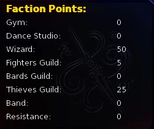
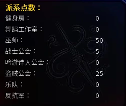

Select a screenshot to enlarge it. Screens show example inventories and progress.
The Wizard faction has no single guild hall. Learn qualifying magic skills, study with spellcasters and complete their relevant actions to raise Wizard Clout on your character sheet. The early milestone is 50 Clout: request Gandon’s initiation test and pass to recruit Lime.
- Visit Sashina on schedule; Mystical Training steadily raises both Mystic and Clout.
- Meet Gandon. At seven Rose & Thorn reputation, visit its entrance for Blinky’s arrival, then meet her in the Arcane Room.
- Have 50 Wizard Clout, Gandon Acquaintance and Blinky Known; request the test in the Wizard Tower interior 10:00–20:00.
- The test consists of five judgement questions. Clout opens the test; your answers determine the score.
Where to find the teachers
| Teacher | Location | Schedule |
|---|---|---|
| Sashina | Ancient Earth Shrine | 06:00–15:00 |
| Sashina | Ancient Earth Shrine (Altar Chamber) | 15:00–21:00 |
| Sashina | Sorceress Home | 21:00–06:00 |
| Aziza | Arcane Shop | 10:00–18:00 |
| Gandon | Wizard's Interior | 10:00–20:00 |
| Blinky | Arcane Room | 00:00–24:00 |
| Sabbath | Witch's Hut | Odd days, 18:00–24:00 |
Reach Gandon’s room through the Arcane Shop and Wizard Tower. Sashina’s shrine exterior, altar chamber and home are separate locations, so change location as her schedule changes. Blinky’s arrival opens the Rose & Thorn Arcane Room without a separate construction payment.
How Wizard Clout works
The character sheet shows qualifying learned-skill points plus earned action Clout. Skills contribute at most 25; actions can keep adding more, so 50 is not a cap. Meeting a threshold does not spend Clout. Only the 21 listed skills contribute skill points; a magical theme alone does not qualify a skill.
Show every skill contribution
| Points each | Skills |
|---|---|
| 1 | Elemental Blast, Healing Touch, Mana Channeling, Enchantment, Divination, Telekinesis, Illusion Weaving, Spirit Communication, Protective Ward, Energy Drain, Transmutation, Ritual Mastery, Arcane Knowledge, Inner Peace, Wizardry, Battle Meditation, Mystic Seduction |
| 2 | Master Wizard, Dark Magic, Light Magic, Blink |
A known skill counts once regardless of which teacher or other normal source taught it. Alchemy, Arcane Surge and Sashina’s Gift are outside this 21-skill list.

Reliable Clout and stat growth
Mystical Training is the straightforward repeatable route: visit Sashina in the Altar Chamber 15:00–21:00, up to six times daily. Recover Energy and Calm between sessions. You do not need all 21 skills before attempting faction progress.
Show action costs and rewards
| Action | Gate or location | Cost and frequency | Reward |
|---|---|---|---|
| Sashina · Mystical Training | Altar Chamber; Stranger | 80 min; 50 Energy, 40 Calm; six/day | +1 Mystic, +1 Clout; also relationship |
| Aziza · Magical Artifact Tutorial | Arcane Shop | $200; 60 min; once | +3 Clout, +3 base relationship |
| Blinky · Listen to Her Journeys | Arcane Room | 90 min; once | +2 Clout, +3 base relationship |
| Aziza · Arcane Mastery Path | Known; Communication 75 | 30 min; once; Arcane Shop | +1 Mystic, +1 Clout, +13 relationship |
| Blinky · Wisdom of Moments | Known; Communication 50 | 30 min; once; Arcane Room | +1 Mystic, +1 Clout, +5 relationship |
| Sashina · Emotional Magic | Known; Communication 30 | 30 min; once; Sorceress Home | +1 Mystic, +1 Clout, +8 relationship |
| Lindia · Spell Control Notes | Friend; Mystic 35; Training Room 09:00–18:00 | 45 min; requires 12 Energy and 5 Calm available. Energy and Calm are not spent. | +1 Mystic, +1 Clout, +8 direct relationship |
| Gandon · Accept Quest | Stranger | 0 min; once | +1 Clout |
| Gandon · Accept Revenge Quest | Known | 0 min; once | +1 Clout |
A wandering-mage Search encounter gives one Clout for a successful discussion, checking modified Mystic against 100. Its Mystic Seduction option gives one Clout and one Mystic when available. Treat random encounters as an extra source alongside scheduled teachers.
Skill lessons and special sources
Each teaching action has its own relationship and stat requirements. The general skill-list stat description does not replace those lesson gates. The table lists the actual offered lessons and their base drains; learning an already known skill does not add more skill Clout.
Show all fixed lessons and costs
| Skill | Teacher and location | Requirement | Gold and time | Base drain |
|---|---|---|---|---|
| Healing Touch | Sashina · Ancient Earth Shrine | Acquaintance; Mystic 15 | $0 · 150 min | 60 Energy, 30 Calm |
| Elemental Blast | Sashina · Ancient Earth Shrine (Altar Chamber) | Known; Mystic 20 | $0 · 150 min | 50 Energy, 30 Calm |
| Illusion Weaving | Sashina · Ancient Earth Shrine (Altar Chamber) | Acquaintance; Mystic 20 | $0 · 150 min | 70 Energy, 40 Calm |
| Telekinesis | Sashina · Ancient Earth Shrine (Altar Chamber) | Friend; Mystic 25 | $0 · 150 min | 80 Energy, 60 Calm |
| Mana Channeling | Aziza · Arcane Shop | Met | $300 · 120 min | 50 Energy |
| Arcane Knowledge | Aziza · Arcane Shop | Met; Intelligence 20 | $400 · 180 min | 40 Energy, 60 Calm |
| Enchantment | Aziza · Arcane Shop | Known | $400 · 150 min | 70 Energy |
| Protective Ward | Blinky · Arcane Room | Met; Mystic 14 | $0 · 180 min | 70 Energy, 40 Calm |
| Divination | Blinky · Arcane Room | Known; Mystic 22 | $0 · 200 min | 80 Energy, 50 Calm |
| Wizardry | Gandon · Wizard's Interior | Known | $0 · 150 min | 40 Energy, 40 Calm |
| Master Wizard | Gandon · Wizard's Interior | Acquaintance | $0 · 300 min | 70 Energy, 70 Calm |
| Alchemy | Sabbath · Witch's Hut | Known | $250 · 150 min | 50 Energy, 50 Calm |
| Ritual Mastery | Sabbath · Witch's Hut | Friend; Mystic 22 | $500 · 240 min | 60 Energy, 60 Calm |
| Spirit Communication | Zodiac · Fortune Teller's Booth | Friend; Mystic 18 | $300 · 180 min | 45 Energy, 40 Calm |
| Energy Drain | Melanthe · Assigned cell in the Rose & Thorn Dungeon | Friend; Mystic 24 | $500 · 220 min | 70 Energy, 50 Calm |
| Battle Meditation | Monk's Temple Training Hall | Mystic 10 | $100 · 200 min | 60 Energy, 60 Calm |
| Healing Touch | Monk's Temple Training Hall (alternative lesson) | Mystic 15 | $100 · 200 min | 60 Energy, 60 Calm |
| Inner Peace | Monk's Temple Training Hall | Mystic 30 | $350 · 250 min | 70 Energy, 70 Calm |
Show special skills and Sashina’s advanced training
- Blink: Blinky Close Friend, Mystic 28, Arcane Room; 260 minutes, 105 Energy, 65 Calm.
- Mystic Seduction: Sashina at the shrine exterior, 300 relationship and Mystic 65; 180 minutes. Close Friend starts at 200, so keep building the relationship until the action becomes available.
- Transmutation: earned through Sashina’s rescue follow-up to Gandon’s errands; navigation appears in the optional quest section below.
- Dark Magic and Light Magic: spend three Crystals at Lillian’s Lair in Medieval, Kings Demesne (Secret Lair from Back Alleys) or Seraph’s Sanctuary in Future, Fringe Zone (Cloudy Path from the Sky-Level Atmospheric Management Station) respectively. Each gives two skill Clout; these purchase actions do not add the skill-list Mystic-30 gate.
- Sashina’s Visions of the Future, Fears of the Void and Walk in Nature: shrine exterior (Known, 120 min), Altar Chamber (Acquaintance, 140 min), and shrine exterior (Friend, 90 min). Each is a one-time conversation worth one Clout.
- Sashina’s Final Exam: her home; Romantic, Mystic 90, Master Wizard and Mystic Seduction; 160 minutes, 120 Energy and 50 Calm. Repeatable once a day, with one Clout.
- Arcane Surge: Altar Chamber, Romantic and Mystic 60; 350 minutes, 180 Energy and 100 Calm. See Combat for its effect.
- A Final Preparation: after main-story beat 55, visit the Altar Chamber with Sashina In Love; 180 minutes and 200 Energy to learn Sashina’s Gift. This guide lists the action requirements without explaining the scene.
Navigating Gandon’s errands
Gandon’s relationship mainly advances through his errands. If the initiation needs Acquaintance and he is still below it, check his current quest first. The optional steps list navigation, requirements and rewards only.
Show the Gandon/Sabbath/Sashina errand order (quest spoilers)
- Accept Gandon’s first quest. Visit Sabbath’s hut on an odd day 18:00–24:00 for the handoff, then return to the Wizard Tower interior 10:00–20:00. This part gives Gandon +10 and Sabbath +10 direct relationship.
- Next meet Sashina at the shrine exterior 06:00–15:00, with both Sashina and Gandon at Met or higher, for her rescue follow-up. It teaches Transmutation and gives Gandon +15 and Sashina +10 direct relationship, bringing Gandon to Known through the chain. A separate hut follow-up gives Sabbath another +10.
- At Known, accept Gandon’s revenge quest for one more Clout. Reach 500 relationship with Sabbath and use Seduce Sabbath (120 minutes, 30 Energy) to obtain its delivery item, then return to Gandon 10:00–20:00. Delivery gives Gandon +25 direct relationship. His normal Talk gives no relationship points, so repeated conversation does not substitute for this progression.
The initiation test at 50 Clout
Have 50 total Wizard Clout, Gandon Acquaintance and Blinky Known, with Lime not yet acquired. Gandon offers Wizard Initiation in the tower interior 10:00–20:00: 60 minutes with no extra gold, Crystals or fixed Energy charge. There is no additional Sashina or Aziza relationship-stage gate.
Five visions each offer five scored answers worth 1–5 points. Maximum 25; passing requires 17. Choices are shuffled, so use the answer text rather than button position. The opening motivation is unscored. Failure permits another attempt after midnight and does not permanently block recruitment.
Passing recruits Lime and gives one Crystal, or three total for a perfect 25. It also gives ten Wizard Clout and direct relationship: Lime +50, Gandon +25, Sashina +15, Aziza +15. Blinky is not included in that relationship payout.
Optional test answer reference
Show all five questions’ scores and answers (puzzle spoilers)
For 25 points, choose the five-point answer in each vision. The table is sorted by score rather than screen position and omits the story outcomes.
| Vision | Score and answer |
|---|---|
| 1 | 5 · Part the flames with a wind corridor - create a safe path for escape 4 · Summon a watery tornado - pull water from the well through the flames 3 · Create a tornado to lift the girl out through the roof 2 · Blast a powerful gust of wind to blow out the fire 1 · Vacuum the room - remove all air to suffocate the flames |
| 2 | 5 · Reach into the villagers' minds - nudge them to rush forward and help 4 · Subtle nature magic - calm the mule, let a root catch the wheel 3 · Rush to help physically - your effort might inspire others to join 2 · Save them with obvious magic - reveal yourself to protect the family 1 · Do nothing - the risk of exposure is too great |
| 3 | 5 · Something sustainable - a trade, a shop, teaching. Magic should serve my life. 4 · Still learning, still curious. I want magic to grow with me, not consume me. 3 · Using my gifts to help others and make a difference in the world. 2 · Honestly? I have not thought that far ahead. 1 · The most powerful wizard anyone has ever seen. |
| 4 | 5 · Blink away - refuse the choice entirely 4 · Grant me knowledge - even if I must bear the loneliness of always being wisest 3 · Grant me the power to save deserving lives - even if undeserving must be extinguished 2 · Grant me long life - even at the cost of life force from others 1 · Grant me immense power - even if that energy must be drained from innocents |
| 5 | 5 · Study it fully - knowledge is worth the price. Marks are badges of pursuit. 4 · Copy the useful parts carefully - minimize exposure while gaining what I can 3 · Seal it away for future generations to decide 2 · Destroy it - some knowledge is too dangerous to exist 1 · Turn it over to the authorities - let them handle it |
Magical progression after the test
Wizard Clout has no universal named-rank ladder. Advanced skills, Grimoire improvements and Sorcerer training each check their own relationship, equipment and story requirements.
Show Grimoire levels 6–10 (action requirements only)
| Level | Teacher and location | Action | Requirement | Base cost |
|---|---|---|---|---|
| 5→6 | Aziza · Arcane Shop | Sixth Binding | In Love; Grimoire exactly level 5 | 180 min; 80 Energy, 40 Calm |
| 6→7 | Blinky · Arcane Room | Seventh Fold | In Love; Grimoire exactly level 6 | 180 min; 90 Energy, 50 Calm |
| 7→8 | Sashina · Ancient Earth Shrine (Altar Chamber) | Eighth Star | In Love; Grimoire exactly level 7 | 180 min; 100 Energy, 70 Calm |
| 8→9 | Sabbath · Witch's Hut | Ninth Hex | In Love; Grimoire exactly level 8 | 180 min; 110 Energy, 80 Calm |
| 9→10 | Nyxara · Void Chamber | Tenth Anchor | In Love; Grimoire exactly level 9 | 180 min; 120 Energy, 90 Calm |
These five lessons have no additional gold or Crystal fee and proceed one level at a time. Level ten additionally requires Nyxara’s A Moment of Her Own heart-to-heart; see Nyxara for the sequence. Some strenuous Sashina actions are temporarily blocked during visible pregnancy.
Aziza’s Sorcerer training requires In Love, Lime acquired, Sashina’s Gift learned, and the ordinary-dungeon Floor 40 miniboss defeated; 300 minutes, 150 Energy and 150 Calm. It does not spend Wizard Clout. Use Specialist Classes for path growth and multipliers.
Common blockers
- Blinky missing: reach seven Rose & Thorn reputation, visit its entrance for her arrival, then enter the Arcane Room from the West Hall.
- High Clout but no test: check Gandon Acquaintance, Blinky Known, tower hours 10:00–20:00 and whether you failed today.
- Gandon relationship not rising: normal Talk adds no relationship; continue the item errands and deliveries.
- Failed despite 50 Clout: answers determine the exam score independently of Clout and stats.
- Magical skill adds no Clout: only the 21 listed skills count, once each.
- Test gone after Lime joins: that is its completed state. Continue with relationships, equipment and advanced magic.
巫师阵营没有单独的公会大厅。学习指定魔法技能、向施法者请教并完成相关行动，都会提高角色面板中的巫师声望。早期明确目标是达到50声望，向Gandon申请考验，通过后招募Lime。
- 按Sashina的时段找到她，使用神秘训练稳定提高神秘与声望。
- 结识Gandon；玫瑰与荆棘声望达到7后，在入口推进Blinky的到来，再去奥术房与她交谈。
- 满足50巫师声望、Gandon相识、Blinky已知，10:00–20:00到巫师塔内部选择考验。
- 考验是五道情境选择题；声望只负责开放考验，分数取决于回答。
去哪找老师
| 人物 | 地点 | 时段 |
|---|---|---|
| Sashina | 远古大地神殿 | 06:00–15:00 |
| Sashina | 远古大地神殿（祭坛室） | 15:00–21:00 |
| Sashina | 女术士之家 | 21:00–06:00 |
| Aziza | 奥术商店 | 10:00–18:00 |
| Gandon | 巫师塔内部 | 10:00–20:00 |
| Blinky | 奥术房 | 00:00–24:00 |
| Sabbath | 女巫小屋 | 奇数日18:00–24:00 |
Gandon的房间从奥术商店进入巫师塔后抵达。Sashina的神殿外部、祭坛室和家中是三个不同地点；错过时段就需要换地点。Blinky加入后开放玫瑰与荆棘的奥术房，不需另付建房费。
巫师声望如何计算
角色面板显示的总数＝已学会的指定技能分数＋通过行动获得的声望。技能部分最多25；行动部分可继续积累，因此50不是上限。检查门槛不会消耗声望。只有下表指定的21项技能贡献技能分数，不能把所有看起来与魔法有关的技能都算进去。
展开全部技能分数
| 每项分数 | 技能 |
|---|---|
| 1 | 元素爆破, 治愈之触, 法力引导, 附魔, 占卜, 念动力, 幻象编织, 灵体沟通, 防护结界, 能量汲取, 转化术, 仪式精通, 奥术知识, 内心平静, 巫术, 战斗冥想, 神秘诱惑 |
| 2 | 魔法大师, 黑暗魔法, 光明魔法, 闪现 |
已会技能只算一次，无论从哪位老师或哪种其他正常途径学会。炼金术、奥术涌动和Sashina的恩赐本身不在这21项中。

可靠的声望与属性成长
神秘训练是最直接的可重复路线：15:00–21:00在祭坛室找Sashina，每天最多6次。恢复精力与镇定后再继续；新玩家不必先收集全套21项技能。
展开行动成本与奖励
| 行动 | 门槛或地点 | 成本与次数 | 奖励 |
|---|---|---|---|
| Sashina · 神秘训练 | 祭坛室；陌生人即可 | 80分钟；50精力、40镇定；每天6次 | +1神秘、+1声望，另有关系增长 |
| Aziza · 魔法神器教程 | 奥术商店 | $200；60分钟；仅一次 | +3声望、基础关系+3 |
| Blinky · 聆听她的旅程 | 奥术房 | 90分钟；仅一次 | +2声望、基础关系+3 |
| Aziza · 奥术精通之路 | 已知；沟通75 | 30分钟；仅一次；奥术商店 | +1神秘、+1声望、关系+13 |
| Blinky · 片刻的智慧 | 已知；沟通50 | 30分钟；仅一次；奥术房 | +1神秘、+1声望、关系+5 |
| Sashina · 情感魔法 | 已知；沟通30 | 30分钟；仅一次；女术士之家 | +1神秘、+1声望、关系+8 |
| Lindia · 法术控制笔记 | 朋友；神秘35；训练室09:00–18:00 | 45分钟；开始时需有12精力、5镇定，两者均不扣除。 | +1神秘、+1声望、直接关系+8 |
| Gandon · 接受任务 | 陌生人 | 0分钟；仅一次 | +1 声望 |
| Gandon · 接受复仇任务 | 已知 | 0分钟；仅一次 | +1 声望 |
后巷搜寻遇到流浪法师时，交流成功给1声望，成功率看当前神秘，对100判定。学会神秘诱惑后，相关选项可给1声望与1神秘。随机遭遇适合作为额外来源，稳定推进仍可依靠老师与课程。
技能课程与特殊获得方式
课程的关系与属性门槛各不相同，不能只看技能列表中的通用属性说明。以下列出老师实际提供的课程，消耗按基础值列示。已知技能不会再次增加技能声望。
展开全部固定课程与成本
| 技能 | 老师与地点 | 门槛 | 金币与时间 | 基础消耗 |
|---|---|---|---|---|
| 治愈之触 | Sashina · 远古大地神殿 | 相识; 神秘 15 | $0 · 150分钟 | 60 精力, 30 镇定 |
| 元素爆破 | Sashina · 远古大地神殿（祭坛室） | 已知; 神秘 20 | $0 · 150分钟 | 50 精力, 30 镇定 |
| 幻象编织 | Sashina · 远古大地神殿（祭坛室） | 相识; 神秘 20 | $0 · 150分钟 | 70 精力, 40 镇定 |
| 念动力 | Sashina · 远古大地神殿（祭坛室） | 朋友; 神秘 25 | $0 · 150分钟 | 80 精力, 60 镇定 |
| 法力引导 | Aziza · 奥术商店 | 已遇见 | $300 · 120分钟 | 50 精力 |
| 奥术知识 | Aziza · 奥术商店 | 已遇见; 智力 20 | $400 · 180分钟 | 40 精力, 60 镇定 |
| 附魔 | Aziza · 奥术商店 | 已知 | $400 · 150分钟 | 70 精力 |
| 防护结界 | Blinky · 奥术房 | 已遇见; 神秘 14 | $0 · 180分钟 | 70 精力, 40 镇定 |
| 占卜 | Blinky · 奥术房 | 已知; 神秘 22 | $0 · 200分钟 | 80 精力, 50 镇定 |
| 巫术 | Gandon · 巫师塔内部 | 已知 | $0 · 150分钟 | 40 精力, 40 镇定 |
| 魔法大师 | Gandon · 巫师塔内部 | 相识 | $0 · 300分钟 | 70 精力, 70 镇定 |
| 炼金术 | Sabbath · 女巫小屋 | 已知 | $250 · 150分钟 | 50 精力, 50 镇定 |
| 仪式精通 | Sabbath · 女巫小屋 | 朋友; 神秘 22 | $500 · 240分钟 | 60 精力, 60 镇定 |
| 灵体沟通 | Zodiac · 占卜摊位 | 朋友; 神秘 18 | $300 · 180分钟 | 45 精力, 40 镇定 |
| 能量汲取 | Melanthe · 玫瑰与荆棘地牢中分配的牢房 | 朋友; 神秘 24 | $500 · 220分钟 | 70 精力, 50 镇定 |
| 战斗冥想 | 僧侣寺院修行厅 | 神秘 10 | $100 · 200分钟 | 60精力、60镇定 |
| 治愈之触 | 僧侣寺院修行厅（另一处课程） | 神秘 15 | $100 · 200分钟 | 60精力、60镇定 |
| 内心平静 | 僧侣寺院修行厅 | 神秘 30 | $350 · 250分钟 | 70精力、70镇定 |
展开三个特殊技能与Sashina的进阶内容
- 闪现：Blinky亲密朋友、神秘28，奥术房，260分钟、105精力、65镇定。
- 神秘诱惑：神殿外部找Sashina，关系300、神秘65，180分钟。亲密朋友阶段的起点只有200，仍须继续培养到该行动开放。
- 转化术：完成Gandon相关的回访支线后，由Sashina的救援任务获得；导航顺序在下方可选提示中。
- 黑暗魔法与光明魔法：分别在中世纪国王领地的Lillian的巢穴（从后巷的秘密巢穴进入）和未来边缘区的Seraph的圣所（从天空级大气管理站的云雾小径进入），用3水晶学习，每项贡献2技能声望；这两处购买行动不额外要求技能列表所写的神秘30。
- Sashina的未来幻视、对虚空的恐惧、自然漫步：分别在神殿外部（已知，120分钟）、祭坛室（相识，140分钟）、神殿外部（朋友，90分钟），各完成一次给1声望。
- Sashina的最终考试：家中，浪漫感、神秘90、魔法大师与神秘诱惑，160分钟、120精力、50镇定；可重复，每天一次，另加1声望。
- 奥术涌动：祭坛室，浪漫感、神秘60，350分钟、180精力、100镇定；见战斗系统了解效果。
- 最后的准备：主线55完成后，在祭坛室，Sashina恋爱中，180分钟、200精力，学会Sashina的恩赐。此处只说明操作条件；剧情内容不在本指南展开。
Gandon的任务导航
Gandon的关系主要靠任务推进；若考验需要相识而他一直停在较低阶段，先查看他的当前委托。下面只列路线、条件与奖励。
展开Gandon／Sabbath／Sashina支线顺序（任务剧透）
- 向Gandon选择接受任务，前往Sabbath的女巫小屋（奇数日18:00–24:00），完成物品交接，再回巫师塔内部（10:00–20:00）推进。此段Gandon关系直接+10，Sabbath直接+10。
- 随后在神殿外部06:00–15:00见Sashina，双方均已遇见，推进她的救援任务。获得转化术，Gandon直接+15、Sashina直接+10；Gandon由此可达到已知。女巫小屋另有一次回访，Sabbath直接+10。
- Gandon已知后可接复仇任务，另得1声望。Sabbath关系达到500后可选择诱惑Sabbath（120分钟、30精力），获得交付物；回巫师塔内部10:00–20:00交给Gandon，关系直接+25。Gandon的普通交谈不给关系点，不能靠反复聊天跨过相识门槛。
入会考验：50声望后的下一步
需要50总巫师声望、Gandon相识、Blinky已知，且尚未招募Lime。Gandon在巫师塔内部10:00–20:00提供巫师入门仪式，60分钟，无额外金币、水晶或固定精力费用。无需另外把Sashina或Aziza提高到指定关系阶段。
五段幻象各有五种回答，每题1–5分，满分25，17分通过。题目中选项会打乱，不能照固定按钮位置作答；开场理由不计分。失败后等到游戏午夜再尝试，不会永久封锁招募。
通过奖励：Lime加入；通常1水晶，25分完美通过则为3水晶（共3，不是另加3）；巫师声望+10；关系直接增加Lime50、Gandon25、Sashina15、Aziza15。Blinky不在这次关系奖励中。
考验答案参考
展开五题全部分数与答案（谜题剧透）
要拿25分，每题选5分答案。下表按分数排列，与屏幕选项位置无关；不展开各选择导致的剧情结果。
| 题目 | 分数与答案 |
|---|---|
| 1 | 5 · 用风道分开火焰，开辟一条安全逃生路线 4 · 召出水龙卷，把井水穿过火焰引入屋内 3 · 制造龙卷风，把女孩从屋顶卷出来 2 · 释放一阵强风，把大火吹灭 1 · 抽空房间里的空气，让火焰窒息熄灭 |
| 2 | 5 · 触及村民们的心神——轻轻推动他们冲上前帮忙 4 · 施展隐蔽的自然魔法——安抚骡子，让树根卡住车轮 3 · 亲自冲过去帮忙——你的行动也许能鼓舞其他人加入 2 · 用明显的魔法救下他们——暴露自己来保护这家人 1 · 什么都不做——暴露的风险太大了 |
| 3 | 5 · 做些能长久维持的事——手艺、店铺、教学。魔法应该服务于我的生活。 4 · 依然学习，依然好奇。我希望魔法与我一同成长，而不是吞噬我。 3 · 用我的天赋帮助他人，给这个世界带来改变。 2 · 说实话？我还没想过那么远。 1 · 成为世人见过的最强巫师。 |
| 4 | 5 · 闪现离开——彻底拒绝这道选择 4 · 赐予我知识——哪怕我必须承受永远最为明智的孤独 3 · 赐予我拯救值得拯救之人的力量——哪怕不值得的人必须被抹去 2 · 赐予我漫长生命——哪怕代价是他人的生命力 1 · 赐予我巨大的力量——哪怕那份能量必须从无辜者身上抽取 |
| 5 | 5 · 彻底研究它——知识值得付出代价。印记是追求的勋章。 4 · 小心抄录有用的部分——在尽量减少接触的同时获取所能获取的知识 3 · 将它封存起来，交由后世决定 2 · 摧毁它——有些知识太危险，不该存在 1 · 交给权威机构——让他们处理 |
考验之后的魔法成长
巫师声望没有一条通用的命名阶级表。更高阶技能、魔导书强化和术士训练各检查自己的关系、装备与主线条件。
展开魔导书6–10级课程（只含操作门槛）
| 等级 | 人物与地点 | 行动 | 条件 | 基础消耗 |
|---|---|---|---|---|
| 5→6 | Aziza · 奥术商店 | 第六重缚印 | 恋爱中；当前魔导书必须正好为5级 | 180分钟；80精力、40镇定 |
| 6→7 | Blinky · 奥术房 | 第七折叠 | 恋爱中；当前魔导书必须正好为6级 | 180分钟；90精力、50镇定 |
| 7→8 | Sashina · 远古大地神殿（祭坛室） | 第八星 | 恋爱中；当前魔导书必须正好为7级 | 180分钟；100精力、70镇定 |
| 8→9 | Sabbath · 女巫小屋 | 第九十六进制 (Ninth Hex) | 恋爱中；当前魔导书必须正好为8级 | 180分钟；110精力、80镇定 |
| 9→10 | Nyxara · 虚空密室 | 第十锚点 | 恋爱中；当前魔导书必须正好为9级 | 180分钟；120精力、90镇定 |
五次均不额外收费金币或水晶，按顺序逐级进行。第10级另需完成Nyxara的《属于她的一刻》交心谈话；准确行动顺序见Nyxara指南。Sashina部分高强度课程在明显怀孕期间会暂时不可选。
术士训练由Aziza提供：恋爱中，已招募Lime、学会Sashina的恩赐，并击败普通地下城楼层40的关卡首领；300分钟、150精力、150镇定。它不要求再支付或扣除巫师声望。成长和倍率见专精职业。
常见卡关
- 看不到Blinky：先把玫瑰与荆棘声望提高到7，再到入口推进到来事件；随后从西侧走廊进入奥术房。
- 声望很高但考验不出现：核对Gandon相识、Blinky已知、塔内10:00–20:00，以及今天是否已失败。
- Gandon关系不涨：普通聊天不加关系，继续他的物品委托与交付。
- 声望到了50却考试失败：分数独立于声望和属性，需按题目选择回答。
- 技能有魔法主题却不加声望：只有上方21项计入技能部分；学一次只算一次。
- 已招募Lime后考验消失：这是正常完成状态，后续重点是关系、装备与更高阶魔法。
Adapted and updated from the community Chronoromancer Wiki. Community source and history · CC BY-SA 4.0. Game images © Chronoromancer Studio.